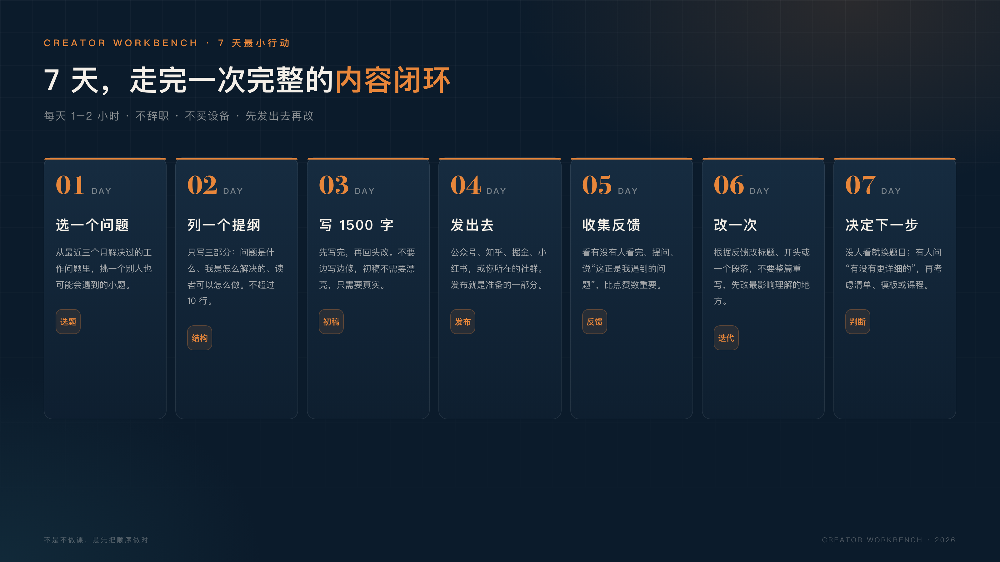

副业不是再做一份工作。
而是先找到一个愿意为你交付价值的人。
我一度也以为，技术人做副业，第一步就是做课。
这看起来最像正经生意：有产品、有价格、有交付。花很长时间录课、写讲义、剪视频，上架那天发朋友圈，感觉自己终于有了一个“作品”。
可如果还没有读者、没有验证过需求，结果往往不是卖爆，而是卖出去几份，其中还有朋友支持。
不是课做得不好，是顺序错了。
但课程往往是难度最高的一步。
它需要你有流量，有人愿意听你说话，有人相信你能解决问题，还需要你有能力把复杂的东西讲清楚。更现实的是，它还意味着售后、答疑、更新、退款，以及面对“讲得不好”的评价。
这些条件，一个刚起步的技术人往往很难同时具备。
所以对大多数刚起步的人来说，做课不是起点，是结果。它应该发生在你已经有一批读者、验证过一个需求、并且有人主动问“有没有更系统的内容”之后。
在没有读者的房间里开演唱会，唱得再好也没人来。
那第一步应该做什么？
写一篇能解决一个具体问题的文章。
在我看来，文章是成本很低的一种市场调研。你不需要先搭网站、录视频、做海报，只需要一个题目、一个下午和一篇 1500 字的草稿。
文章也能暴露你有没有真东西。你以为是常识的经验，可能正是别人卡了三个月的问题；你以为很厉害的方法，写出来才发现自己也没想清楚。
写作不是简单地输出，而是逼自己把问题想清楚。这句话听起来像鸡汤，但确实如此。你以为自己懂了，写下来才会发现哪里没懂。
更重要的是，文章是信任的起点。读者看完一篇文章，会判断三件事：你懂不懂、你说得清不清楚、你值不值得继续关注。
这三件事，比任何“个人 IP 定位”都真实。
技术人最适合起步的三种文章，其实很具体：
这三种文章不需要文采，只需要你真的做过。
你可能会说，工作太忙，哪有时间写。其实不需要整块时间：通勤时列提纲，午休写 300 字，晚上改一遍，一周足够写完第一篇。真正阻碍你的，往往不是时间，是“我要写得足够好”的念头。
一篇文章不需要写得多漂亮，但要满足三个标准：
因为做课看起来最像我们熟悉的工作。
写大纲、做课件、录视频、搭交付流程，这些都像在做一个项目。技术人不怕做项目，怕的是面对一个不确定的市场。
你大概也听过这种说法：做课是个人 IP 的起点，是知识变现的捷径。于是很多人把“做出一门课”当成了目标，却忘了先问一句：有人需要吗？
还有一个更隐蔽的原因：技术人习惯憋大招。
我们总觉得，只有把一个东西做得足够完整、足够系统，才配拿出来给别人看。写一篇 1500 字的文章，显得太轻；做一个 20 节的课程，才像回事。
但大多数时候，市场不为“完整”买单，只为“有用”买单。
一个能解决具体问题的小文章，比一门没人需要的完整课程更有价值。
我一度也这么想：我不会写文章。
其实不是不会写，是不敢发。
怕写得太浅，被同行笑话；怕观点不成熟，被人反驳；怕没人看，显得自己很失败。
但你换个角度想：你写的是给“三个月前的自己”看的，不是给行业大佬看的。只要你比读者早走一步，你就有资格写。
而且技术人有一个天然优势：我们习惯把问题拆成步骤，把步骤写成文档。写文章，本质上就是把你解决过的一个问题，写成一份更容易读的文档。
你不需要文采，你需要的是具体。
具体的场景、具体的坑、具体的做法，比漂亮的排比句更有价值。
如果你真的想做副业，不要先做课，先做这个 7 天实验。每天投入 1–2 小时，不需要辞职，也不需要先买设备。
第 1 天：选一个问题。
从你最近三个月解决过的工作问题里，挑一个别人也可能会遇到的。不要选太大的题，选一个你能在一个下午写清楚的小题。
第 2 天：列一个提纲。
只列三个部分：问题是什么、我是怎么解决的、读者可以怎么做。不要超过 10 行。
第 3 天：写 1500 字。
不要边写边改。先写完，哪怕很粗糙。写完再回头改。
第 4 天：发出去。
发到公众号、知乎、掘金、小红书，或者你所在的社群。不要等“准备好了”，发布就是准备的一部分。
第 5 天：收集反馈。
看三个东西：有没有人看完、有没有人提问、有没有人说“这正是我遇到的问题”。这比点赞数重要。
第 6 天：改一次。
根据反馈改标题、开头或者某一个段落。不要整篇重写，先改最影响理解的地方。
第 7 天：决定下一步。
判断标准只有三个：有没有人看完、有没有人提问、有没有人愿意为更进一步的交付付费。如果没人看，换题目；如果有人问“有没有更详细的”，再考虑做清单、模板或课程。
这个实验的重点不是写出爆款，而是让你第一次完整走完“选题 → 写作 → 发布 → 反馈”的闭环。

文章发出去之后，不要盯着阅读量焦虑。阅读量受账号基础、发布时间、平台推荐影响，不完全由内容质量决定。
先看三个更重要的信号：
如果三个信号一个都没有，也别急着否定自己。先检查一件事：你的选题离读者的具体问题是不是太远。
标题也一样。不要写“浅谈企业 AI 落地”，写“企业做 RAG 之前，先算清这三笔账”。具体的问题，才会被具体的人看见。
同一个主题发到不同平台，要重写开头。公众号读者看长文，小红书读者看场景，视频观众看冲突，不要把同一段话复制到所有地方。
当你写完几篇，开始有人持续问问题，你就可以考虑下一步了。
我的建议是分三层走：
第一层：免费文章。 建立信任，验证选题。读者愿意看完、愿意转发、愿意提问，说明这个方向有需求。
第二层：低价产品。 一份清单、一个模板、一个小工具，比如价格 9.9 到 99 元。它的作用不是赚大钱，而是验证“有人愿意为你的交付付费”。
第三层：课程或陪跑。 当低价产品有人买、有人用、有人反馈，再考虑把内容系统化。这时你做课，才知道该讲什么、不该讲什么。
顺序不能反。
先有读者，再有产品；先有付费，再有课程。
先卖后做，不是投机，是对读者负责。先卖的是明确的交付物和交付时间，不是空口承诺。
如果你也是技术人，也想做副业，我想给你三句话。
第一，你不是不会写，你是不敢发。 先写一篇给“三个月前的自己”看的文章，不需要完美。
第二，先写你解决过的一个问题。 不要写大词，不要追热点，写你真正做过的事。
第三，副业的第一步不是辞职，是开始交付。 哪怕只有一个人因为你的文章少踩了一个坑，你就不再只是“学习者”，你开始创造价值了。
我也在走这条路。
第一篇，我写了自己为什么停止“学习AI”；这一篇，写给同样想做点什么的你。
不用等准备好。
准备是干出来的，不是学出来的。哪怕每周只写一篇，只要每篇都解决一个真实问题，你就在积累自己的作品和读者。
如果你也在做副业，欢迎在评论区说说：你现在卡在哪一步？
共勉。我们下一篇见。